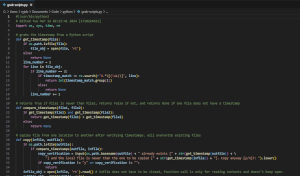
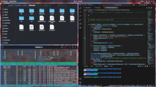
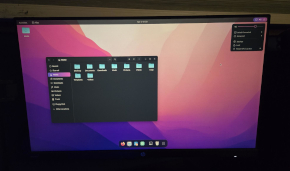
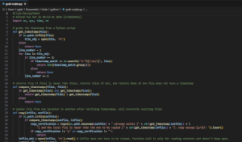
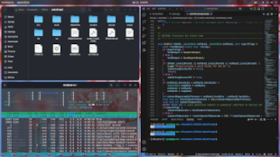
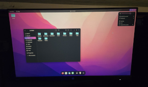

Ryan Smaller - IT B.S.
My Story
My journey as an IT student started when I was roughly 8 years old. I had an ancient Toshiba laptop running Windows Vista SP1, if anyone remembers that mess of an operating system. So, my first experience installing software and tinkering with the various menus and buttons Windows machines have was largely extended. I might have tried playing a game like Minecraft on my computer, and there would be issues with the installation. As frustrating as that was, I learned how to retrace my steps and understand where things went wrong.
From that point onward, my passion for computing silently grew. In middle school, I would sometimes take apart different pieces of hardware I had laying around to see how they worked. These pieces of hardware would often be things like electronic toys, broken hard disks, old laptops and desktops, and so on.
High school is where my passion truly blossomed. I went to a vocational school called Blue Hills Regional Technical School. The fun began when I got into the Computer Information Systems vocation. I learned all the different components and connectors on a computer.
My next journey was computer networking. I created complex simulated Cisco network environments in Packet Tracer, and I competed in a SkillsUSA event about Cisco networking. One of the concepts that has stuck with me over time is subnetting, the process of dividing networks into smaller networks to suit the needs of an organization. It involves a lot of binary math, so it might be confusing to anyone unfamiliar with binary, but it is something I am very passionate about.
I then learned about virtual machines and the UNIX/Linux command line. I use bash on a day-to-day basis for my IT work, and I am extremely grateful to have been familiarized with it. Files can be created, modified, moved around, and removed with extreme precision and efficiency, and automated tasks can be performed quickly without having to navigate user-hostile graphical environments.
And finally, my most recent project has been software development. Combining what I know about subnetting, computer hardware, and command-line environments, I created something I am extremely proud of: command-line and graphical applications for calculating different subnets. For anyone curious, the source code for these applications can be found in my Portfolio.
Collage
 




